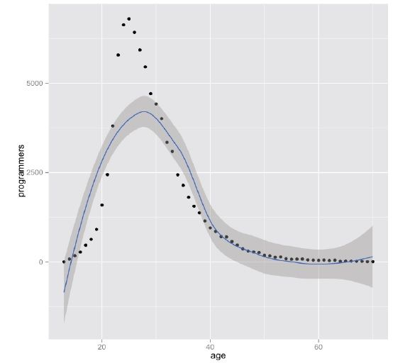
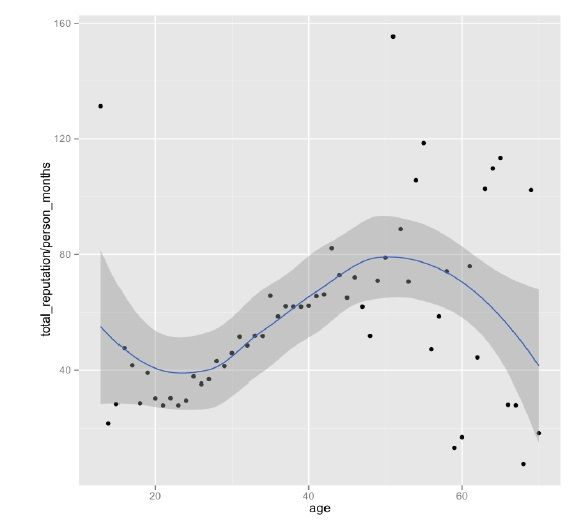
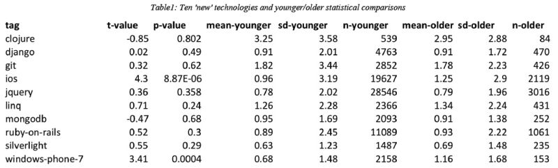

很多同学都会问我“程序员能干多少年？是不是只能干到30岁？”，很多人都说程序员是吃青春饭，大多数程序员都认为，编程这个事只能干到30岁，最多35岁吧。每每我听到这样的说法，都感到相当的无语，就像对《21天速成C++》那样无语，好多时候超级有想和他们争论的冲动，但后来想想算了，因为你无法帮助那些只想呆在井底思维封闭而且想走捷径速成的人。
今天，我们又来谈这个老话题，因为我看到一篇论文，但是也一定会有很多人都会找出各种理由来论证这篇论文的是错的，无所谓了，我把这篇文章送给那些和我一样准备为技术和编程执着和坚持的人。
论文
首先，我们先来看一篇论文《Is Programming Knowledge Related to Age?》，这篇论文是两个北卡罗纳州立大学计算机科学系的两个人Patrick Morrison 和 Emerson Murphy-Hill 对StackOverflow.com上的用户做了相关的数据挖掘得出来的一些数据。（我们知道StackOverflow.com上的数据是公开的，任何人都可以用来分析和统计，所以这篇论文的真实性是有的）
数据采样和清洗条件如下：（数据全量是1694981用户，平均年龄30.3岁）
上述的条件一共过滤出84,248名程序员，平均年龄：29.02岁，平均Reputaion在1073.9分。
年龄分布图
下面我们来看一下他们的年龄分布图：我们可以看到程序员年纪的正态分布（高点在25岁左右，但是中点在29岁左右）

能力和年龄分布图
然后，计算每个人每个月的Reputation，这样可以找到这个用户的真正的活跃时间，这样便于计算这个程序员的真实能力。（总声望 / 活跃时间），可以得到他平均每个月得来的Reputation。
我们来看看程序员的能力和年龄段的分布图：（你可能会大吃一惊）

上图中我们可以看到，程序员的能力在从25岁左右开始上升，一直到50岁后才会开始下降。所以说，程序员吃的不是青春饭。只有码农，靠蛮力，用体力而不是用脑力的程序员才是吃青春饭的人。
年纪大的人是否跟不上新技术
论文的作者分析了Tag，用了最近5年内比较流行的技术Tag，然后用了一套比较严谨的算法来查看那些所谓的“老程序员”是否在新技术上跟上不了，所谓跟不上，也就是这些老的程序员在回答这些新技术上并不活跃。所谓老，就是37岁以上的程序员（就是我现在的年纪）。
得到了下表：可以看到，老程序员和年轻的程序员对于一些新技术的学习来说也是差不多的，甚至有些项还超过了年轻的程序员。

结论
1）程序员技术能力上升是可以到50岁或60岁的。
2）老程序员在获取新技术上的能力并不比年轻的程序员差。
我的一些感受
最后，我说一说我的一些感受：